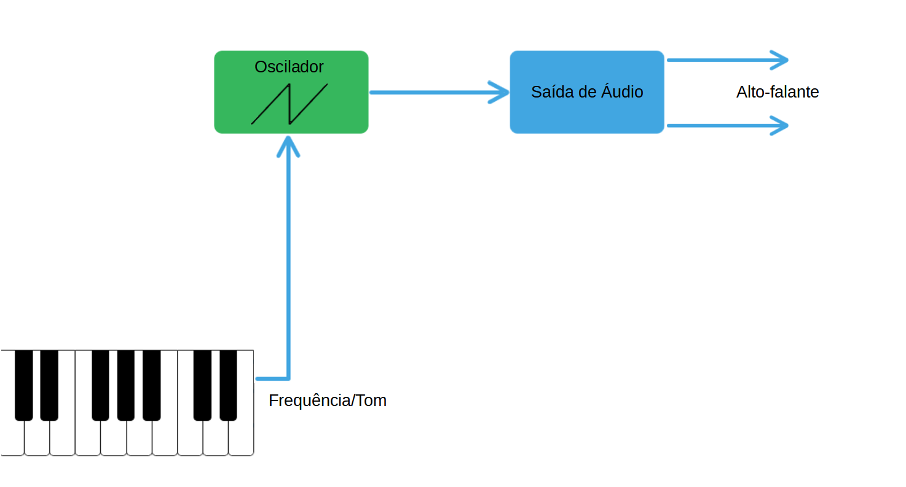
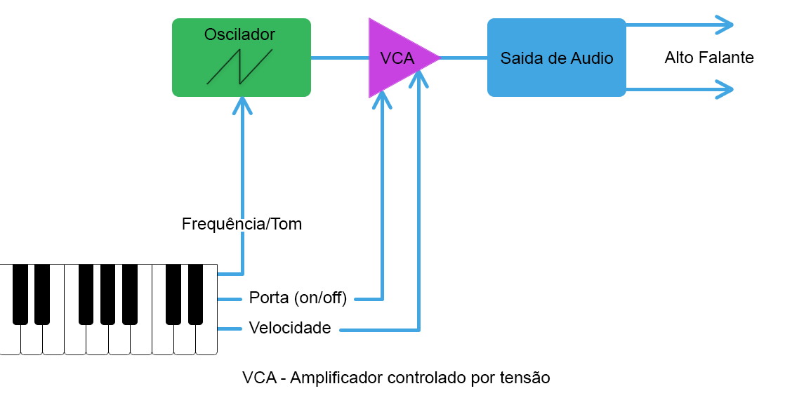
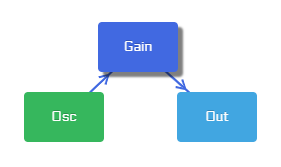

Agora que entendemos osciladores, vamos desenhar um diagrama de um sintetizador simples. Esse sintetizador irá conter apenas um oscilador Dente-de-Serra que irá mandar o sinal para a saida de áudio e então para os alto-falantes. O tom do oscilador vai ser controlado por um teclado
Componentes individuais de um sintetizador que fazem uma única e simples função, como osciladores e filtros, são chamados de módulos. Um sintetizador modular é um sintetizador feito ao juntar vários pequenos módulos de maneiras diferentes. Nos diagramas que utilizamos, as linhas conectando os módulos são como cabos virtuais, mandando o sinal entre eles como um cabo de áudio faria na vida real.
A imagem a seguir demonstra um simples oscilador ligado apenas apenas a saída feito no modulator, para olhar o funcionamento no modulator você pode usar este preset ou reconstruir a imagem com os blocos. Nesta etapa foi utilizado o bloco “osc”, que serve para gerar uma onda entre os tipos de forma de onda básica que podem ser selecionados na opção “Node Parameters”, também é possível modificar a frequência das ondas e consequentemente, o tom.
Temos alguns problemas com esse design de sintetizador, um deles é que não possuímos forma alguma de controlar o volume do oscilador, nosso instrumento sempre estará fazendo barulho. Para consertar esse problema, precisamos adicionar um Amplificador controlado por tensão. A função desse amplificador é para controlar o volume, normalmente chamado de amplitude do sinal. Osciladores e outros módulos que geram som estão sempre gerando um som, e o Amplificador controlado por tensão é o que mantém eles em silêncio quando não estão sendo tocados.
Nos sintetizadores analógicos, os amplificadores controlados por tensão são controlados por fios carregando corrente elétrica, como se é o esperado, mas para sintetizadores digitais, esses amplificadores normalmente não são tão aparentes e não possuem muita necessidade de saber onde eles se encontram ou como são controlados, mas ainda é importante saber como eles funcionam.
Vamos adicionar um amplificador controlado por tensão ao nosso sintetizador agora. Isso significa adicionar um novo módulo e alguns cabos extras, mas não se preocupe, eles serão explicados após o diagrama.
O cabo “porta” indo do teclado ao amplificador controlado por tensão é um sinal que manda uma de duas mensagens ao VCA: “Ligado” se uma tecla for pressionada e “Desligado” caso contrário. Quando o sinal da porta está como desligado, ou fechado, não escutamos nada, quando está como ligado, ou aberto, então o amplificador controlado por tensão transportará o áudio do oscilador para a saída de áudio. O cabo “velocidade” manda um sinal para o amplificador controlado por tensão correspondente ao quão forte, e consequentemente o quão rápido, tocamos em uma tecla, apertando uma tecla com rapidez fará com que o áudio da saída saia mais alto do que se pressionarmos com delicadeza as teclas.
Nesta imagem no modulator, foi utilizado o exemplo anterior com o oscilador usando o bloco “gain” para controlar o volume, você pode checar o preset aqui. No exemplo do modulator utilizado, o bloco “gain” faz o trabalho do amplificador, qualquer ganho maior que 1 irá aumentar o volume, enquanto qualquer ganho abaixo de 1 irá atenuar o volume.